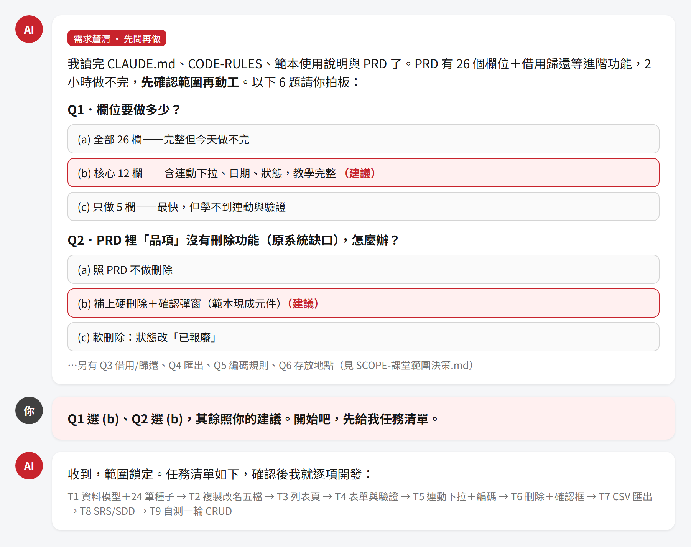

課程大綱
照順序走、不要跳步——後面會用到前面的產出。這門課給會寫程式、但還沒用過 AI harness 開發的工程師；不要求會 Vue／Nuxt，不需要提示詞經驗。
支援平台：Windows 與 macOS（Linux 亦可）。 教材每支腳本都備了兩版——Windows 用 .ps1、macOS／Linux 用同名 .sh，檢查項目、判定標準與 exit code 完全一致。本手冊的指令一律分成兩塊列出，照你自己的平台那一塊做即可；pnpm install／pnpm dev／port 3100 這些跟平台無關。macOS／Linux 一律用 bash 腳本名.sh 執行，就不必先 chmod +x。
| Step | 這一章在做什麼 | 時間 |
|---|---|---|
| step0 | 課程說明、前置檢查 | 10 分 |
| step1 | 為什麼要 harness（有／沒有 harness 產出對比） | 15 分 |
| step2 | CRUD 快速完工秘笈（跑範本 → 玩一輪 → 8 核心檔 → harness 四件 → Design System） | 40 分 |
| step3 | 複製範本開發新模組（PRD → AI 生成 → 反覆修正）重頭戲 | 35 分 |
| step4 | LOOP 工程（改→驗→再改）＋ E2E 功能驗證＋失敗截圖診斷 ＋ 雙 AI 對抗審查 | 15 分 |
| step5 | 課程總結、回去怎麼用 | 5 分 |
課程說明與前置檢查
10 分- 知道這門課要教什麼、怎麼進行。
- 確認機器準備好了（10 項檢查：Node.js、pnpm、git、port 3100、磁碟空間、可執行腳本的環境、工作區可寫入、npm 連線、Playwright Chromium 快取、AI Agent CLI）。
- 紅燈（
[FAIL]）時，知道怎麼讓 AI 幫你把環境修好，而不是卡在那裡等人。
- 上完課要帶走三件能力：看得出有無 harness 的差別、能用 AI 生成新模組、能設計並執行一輪 LOOP 驗證。
- 整堂課只看這一份手冊，照 step0 → step5 順序走；各 step 資料夾放的是工作材料（範本、PRD、腳本），手冊會指示何時用哪個。
- 開課前先跑前置檢查：
# Windows（PowerShell）
cd step0_course_intro
.\preflight.ps1# macOS／Linux（終端機）
cd step0_course_intro
bash preflight.sh看到「前置檢查全數通過，可以開課！」再進 step1。若結尾是「前置檢查全數通過（含 N 項警告），可以開課！」也一樣可以開課——[WARN] 不擋開課（乾淨機器最常見的是 Playwright Chromium 尚未快取）。只有 [FAIL] 一定要處理掉，做法看下面「看到 [FAIL] 紅燈怎麼辦」。
腳本逐項印出 10 項檢查結果（Node.js、pnpm、git、port 3100、磁碟空間、可執行腳本的環境、工作區可寫入、npm 連線、Playwright Chromium 快取、AI Agent CLI），每項前面標著 [PASS]／[WARN]／[FAIL]，最後一行是「前置檢查全數通過，可以開課！」（有警告時是「前置檢查全數通過（含 N 項警告），可以開課！」）。
紅燈不用舉手乾等，也不用自己上網亂查——這堂課的第一個練習就是：把問題交給 AI 排除。照「先照提示做 → 交給 AI → 兩次不好就找講師」三步走：
- 先照腳本印的修復提示做一次。每個
[FAIL]下一行都會印「修復提示：…」（例如「請執行『npm install -g pnpm』安裝 pnpm」）。照做完之後關掉終端機、重開一個新的再跑一次 preflight——剛裝好的 Node／pnpm／git 在舊視窗裡抓不到，這是最常見的假紅燈。 - 還是紅燈，就把整份輸出貼給你的 AI Agent。在工作坊資料夾下開 Agent（Claude Code／Codex／Cursor 這類 CLI，或 IDE 內建的 Agent 對話框都可以），連
[PASS]的行一起貼給它——它要看到完整環境才判斷得準。可以直接複製這段 prompt：
我在跑工作坊的環境前置檢查（Windows 是 step0_course_intro\preflight.ps1，
macOS 是 step0_course_intro/preflight.sh），有幾項 [FAIL]。完整輸出如下：
（把整份 preflight 輸出貼在這裡，PASS 的行也一起貼）
我的作業系統是：Windows 11（Mac 的人改寫 macOS 14）。請你：
1. 逐項說明每個 FAIL 的真正原因，不要只重複腳本印的修復提示。
2. 給我可以直接複製執行的指令，一行一行，每行附一句話說明在做什麼。
3. 指令跑完後帶我重跑一次 preflight，確認紅燈都變綠。
限制：只處理我這台電腦的環境設定，不要改工作坊裡的任何程式碼或腳本；
需要系統管理員權限的步驟，請先講清楚風險再叫我執行。- 同一項讓 AI 修兩次還是紅，就舉手找講師。這就是 step4 會用到的兩次停損鐵律——同一個坑修兩次沒好，代表方向錯了，該換人看，別在原地繞。環境卡關而已，講師手上有離線包和參考解，一定跟得上進度。
這步還有個附帶好處：它順便幫你驗證了 AI Agent 真的能用（登入了、有額度、看得懂你貼的東西）。第 10 項「AI Agent CLI」只偵測得到指令存不存在，測不出帳號狀態；拿一個真實問題請它幫忙一次，才算真的確認完成。
為什麼要有 harness？
15 分- 用「同一句需求、只差有沒有附規矩」的兩個產出，親眼看出差別。
- 知道差別不在美醜，在「每個決定有沒有出處」。
- 知道 harness 管得住什麼、管不住什麼。
harness 就是你交給 AI 的一套「規矩」：專案規則（CODE-RULES）＋設計系統（色票、間距）＋標準範本。沒有它，AI 每次都會自己決定；有了它，AI 照你們的決定做。注意：現在的 AI 不給規矩也寫得出漂亮頁面——所以這一步不是在比誰好看。
- 打開
demo/PROMPT.md，確認兩版給 AI 的需求是同一句，只差有沒有附規矩。 - 雙擊
demo/no-harness.html（沒 harness 版）。 - 雙擊
demo/with-harness.html（有 harness 版）。 - 兩個視窗並排對照下面三項。兩版都真的能新增／刪除，功能一模一樣；差的是「這個決定是誰做的」。
你會發現兩版都很好看，而且功能一模一樣。這就是這一步最重要的體會——先別急著比美醜，左邊那版甚至可能比右邊更討喜（它自己配了色、加了圖示）。重點在別的地方：右邊每一個決定都有出處，左邊全是 AI 自己決定的。教材附的這兩張就是拿 demo/PROMPT.md 實跑出來的；你自己去跑，畫面不會一樣，但下面三項的落差不會變。


#C8232C、必填標紅星、血型固定四選一、電話只收 09 開頭 10 碼——每個決定都查得到出處。| 觀察點 | 沒 harness | 有 harness | 為什麼這項要緊 |
|---|---|---|---|
| 顏色從哪來 | AI 自己發明一套 token：--brand: #e8590c、--danger…命名是它自己取的，色票是它自己挑的，你們的品牌色一次都沒出現（而且它自己那套還漏了 4 個裸色碼在外面） |
用你們給的 token 命名與色票：--ui-sys-color-primary: #C8232C，全檔 11 個色碼一個不多一個不少 |
它做的其實是「對的實務」——但那是它的一套。兩套 token 合不起來，擺在你們現有系統旁邊就是兩個產品 |
| 業務規則從哪來 | AI 自己發明一套：電話用通用格式（連 (02) 1234-5678 都收）、血型自己多加一個選項 |
照規則寫成具名常數：PHONE_PATTERN 只收台灣手機 09 開頭 10 碼、血型固定四選一 |
顏色錯了看得出來，驗證規則錯了要等資料髒掉才發現 |
| 多出來的東西 | 兩版都會自己多做（例如自己加 localStorage 存檔、加額外欄位、加你沒要的功能） | harness 管得住「怎麼寫」，管不住「做多少」——範圍要靠 PRD 和決策點管，那是 step3 的事 | |
這張表是實測出來的，不是想像的。我們用demo/PROMPT.md的兩版 prompt 各跑一次（Claude Sonnet）。沒 harness 那版一點都不醜：它自己選了警示橘、做了響應式、還多做了刪除確認與防注入，甚至自己建了一套 design token（--brand、--danger…）——它知道該用 token，只是用的是它自己的那套。但品牌紅 0 次、電話收 6～15 碼的通用格式（(02) 1234-5678也算合法）、血型多一個「不明」。而兩版都自己加了 localStorage，有 harness 那版還多加了空清單提示、Esc 關閉、焦點歸還。
所以 harness 的價值不是「讓 AI 寫得好看」，是「讓 AI 寫得跟你們一樣」。現在的 AI 不給規矩也能生出漂亮頁面——問題從來不是醜，是每次都長得不一樣、而且會自己發明規則。
先誠實講清楚：demo/那兩份 HTML 是我們用demo/PROMPT.md裡固定的兩版 prompt 各跑一次、挑出來當教材的策展成品，不是每次都會一模一樣重現的實驗。所以別把它們當「鐵證」——要信，就自己拿去實測一遍。
CRUD 快速完工秘笈
40 分- 記住公式：範本給骨架、harness 給規矩、AI 出勞力。
- 把現成範本當使用者操作一輪，建立心智模型。
- 認得前端 harness 四件、Design System、範本八個核心檔。
材料收在 step2_speedrun_kit/ 的兩個資料夾裡。照 ①→⑤ 走，每一步都會點名你此刻要打開哪一份；沒被點到的文件都是「回公司想查再翻」，現在不必讀。
| 資料夾 | 是什麼 | 哪些步驟會用到 |
|---|---|---|
2.1_sample_app | 範本正本（可跑的人員 CRUD）＋規格文件＋UML 圖；harness 四件的實檔也在裡面 | ① ② ③ ④ |
2.2_design_system | Design System：token 實檔、色票與間距手冊、元件目錄 | ⑤ |
① 安裝並啟動範本
cd step2_speedrun_kit/2.1_sample_app/sample-app
pnpm install # 首次安裝依賴，順帶產生型別
pnpm dev # 啟動 dev server開瀏覽器到 http://localhost:3100/template/crud（開根網址會自動導向）。
② 當使用者玩一輪：CRUD 五個檢查點
逐一操作，確認每個都能重現（預期畫面見下面「你應該看到」）：新增一筆 → 進檢視頁編輯 → 刪除跳二次確認 → 關鍵字＋狀態篩選後複製網址開新分頁 → 匯出 CSV。
加分兩件：編輯時清空必填欄位按儲存（看欄位下方紅字）、把視窗縮到手機寬度（看表格變卡片）。
③ 看懂範本結構：8 個核心檔
打開 2.1_sample_app/README.md，對照裡面的「8 個核心檔（複製改名 vs 直接共用）」表看一遍。判斷準則只有一句：跟「這個實體長什麼樣子」有關的 → 複製改名；通用機制 → 直接共用。這張表就是 step3 你要叫 AI 照著做的事。
④ 認識規矩：規矩放在哪、誰會去讀
你不需要讀懂裡面的每一條規則——那是寫給 AI 讀的。就像滷茶葉蛋不必知道滷包裡有幾味藥材，但你得知道滷包放在哪、什麼時候丟下去、換鍋子的時候要不要一起帶走。這一步只要弄懂三件事。
鍋具怎麼用？答案是你幾乎什麼都不用做：
- 滷包不用你端上桌。不管你用哪一個 AI，規矩都會被讀到——有些 Agent 一開對話就自動讀根目錄的規則檔；不會自動讀的，step3 的起手 prompt 第一句就是「先依序讀完這四份文件再動作」。你不需要做任何設定。（哪個 Agent 屬於哪一種，見
step2_speedrun_kit/README.md的對照表。） - 滷包跟著鍋子走。step3 你會把整個
sample-app複製成my-equipment-app，這四份會一起被複製過去。新模組不必重新設定，直接繼承同一套規矩。 - 要改口味就改滷包本身。全教材只有這一份實檔，沒有第二份副本，改完立刻對 AI 生效。
想看一眼滷包裡有什麼？（選配）打開CLAUDE.md掃 30 秒就好——它只有 48 行，你會看到「鎖定技術棧不准換套件、禁止硬編碼顏色、危險操作要二次確認」這類鐵律。四份的完整分工與不同 AI Agent 的載入方式，見step2_speedrun_kit/README.md的「harness 四件：給 AI 的規矩」一節。
⑤ 認識 token：Design System
用瀏覽器打開 2.2_design_system/DESIGN_SYSTEM.html 看色票與間距，知道顏色／間距一律走 token、不硬編碼就夠了——這是 step1 右邊那版之所以像老手寫的原因。
這三份想查才翻，現在別花時間讀：2.1_sample_app/SPEC-範例-人員CRUD.md（需求規格：Use Cases、FR／BR／NFR、驗收清單）、2.1_sample_app/SDD-CRUD標準範本-v1.1.md（設計：檔案結構、行數預算、各檔實作規格）、2.1_sample_app/DIAGRAMS.html（7 張 UML 圖，用瀏覽器開）。它們是「回公司要交的文件長什麼樣」的樣板，不是這一節的功課。
pnpm install 或 pnpm dev 噴一大串紅字，處置跟 step0 同一套：先看訊息有沒有明講原因（最常見是 port 3100 被別的程式占用、或公司網路擋住 npm），還是不行就把終端機從你打的指令那一行開始整段複製，貼給 AI Agent——只貼最後一行紅字它判不準。可以用這個 prompt：
我在跑工作坊的範本專案，指令失敗了。我打的指令和完整輸出如下：
（從你輸入指令那一行開始整段貼上，不要只貼最後一行紅字）
我的作業系統是：Windows 11（Mac 的人改寫 macOS 14）。請你：
1. 先告訴我這是什麼問題（網路擋住？埠被占用？Node 版本不符？相依裝壞了？）。
2. 給我可以直接複製執行的指令，一行一行，每行附一句話說明在做什麼。
3. 跑完帶我確認 http://localhost:3100/template/crud 真的打得開。
限制：不要改範本專案裡的程式碼，我這一步只是要把現成範本原封不動跑起來。同樣是兩次停損：同一個錯誤 AI 修兩次還是不行，就舉手找講師——講師手上有預先打包好的 node_modules 離線包，不會讓你卡在安裝這一關。


| 操作 | 你應該看到 |
|---|---|
| 新增人員 → 儲存 | 成功 toast，列表出現新增那筆 |
| 進檢視頁 → 編輯 → 儲存 | 值更新，回列表反映變更 |
| 垃圾桶 → 二次確認 | 鈕寫「刪除人員」，按下才刪 |
| 打「陳」＋狀態篩選 → 複製網址開新分頁 | 表格即時過濾，新分頁完整還原篩選與排序 |
| 匯出 CSV | 匯出的是篩選＋排序後的全量，非只當頁 |
CLAUDE.md 是專案憲法，AI 每次對話自動讀，不會亂換套件、不硬編碼顏色。AI 出勞力：改欄位、改文案這種重複勞動交給 AI，你只負責決策與驗收。三者湊齊，一個全新 CRUD 模組半小時就能長出符合規範、可跑的骨架。
複製範本開發新模組重頭戲
35 分這一步你不寫程式，你當的是「提需求、做決策、驗成果」的人。 寫程式的粗活是 AI 的事。
- 讀懂 PRD，理解「PRD 給全貌，不是這堂課的範圍」。
- 把需求丟給 AI，讓它先出選擇題釐清範圍，你拍板。
- 打開瀏覽器驗收與修正，重現列表、表單、驗證、刪除、手機五件事。
要長出的新模組是中心裝備物資（跑在 /equipment/crud），用的是跟 step2 同一套範本＋harness。
⓪ 準備工作區
動手之前，先把範本複製成自己的工作專案，並確認 AI Agent 的工作目錄就是這個專案根目錄（不然 AI 讀不到題目文件與 harness）。
# Windows（PowerShell）｜在工作坊根目錄執行：複製範本成你的工作專案
Copy-Item -Recurse step2_speedrun_kit\2.1_sample_app\sample-app step3_new_module\my-equipment-app
# 只把 PRD 放進專案（AI 才讀得到需求）
Copy-Item step3_new_module\PRD-中心裝備物資.md step3_new_module\my-equipment-app\
cd step3_new_module\my-equipment-app
pnpm install
# 在「這個資料夾」開 AI Agent（工作目錄＝專案根目錄）# macOS／Linux（終端機）｜在工作坊根目錄執行：複製範本成你的工作專案
cp -R step2_speedrun_kit/2.1_sample_app/sample-app step3_new_module/my-equipment-app
# 只把 PRD 放進專案（AI 才讀得到需求）
cp step3_new_module/PRD-中心裝備物資.md step3_new_module/my-equipment-app/
cd step3_new_module/my-equipment-app
pnpm install
# 在「這個資料夾」開 AI Agent（工作目錄＝專案根目錄）這裡的 pnpm install 失敗的話，處置跟 step2 的「裝不起來／跑不起來怎麼辦」完全一樣：整段輸出貼給 AI Agent 要它講原因＋給指令，同一個錯誤修兩次沒好就舉手找講師。
下面 ③ 會直接給你三題的「課堂拍板」結果，那是為了讓全班進度一致、兩小時走得完，你可以直接採納。但完整的裁決理由與被放棄的替代方案（例如 D1 為什麼正式環境該用軟刪除）在講師版 instructor/SCOPE-課堂範圍決策.md，等你自己拍完板，講師才會發。這一步真正要練的不是「猜中答案」，是親自跟 AI 把岔路攤開、由你決定砍什麼留什麼——先看完整理由等於直接抄，那段練習就沒了。
harness 四件（CLAUDE.md、CODE-RULES-ui-本專案.md、design-system-summary.md、使用說明）已內建在專案根目錄，複製走範本就跟著走——AI 一進來就讀得到全套規則。
① 讀 PRD
打開 PRD-中心裝備物資.md。題目取材自真實災防平台的頁面（原系統 26 欄＋借用歸還＋維保提醒，兩小時絕對做不完），已先濃縮成一堂課做得完的課堂版（12 欄）——但刻意留了三個決策點（刪除補不補、匯出做不做、編碼規則簡不簡化）給你拍板，連「原系統沒有刪除功能」這種真實缺口都照實保留。
② 貼起手 prompt，讓 AI 先問問題
用 Agent 模式跟 AI 對話（它需要能自己讀檔、改檔）。整段複製貼上：
你是本專案的前端工程師。我們要用現成的 CRUD 標準範本，開發新模組「中心裝備物資」。
請先「依序」讀完專案根目錄的四份文件，讀完再動作：
1. CLAUDE.md（專案憲法）
2. CODE-RULES-ui-本專案.md（前端鐵律：色碼、命名、行數、驗證）
3. 使用說明-複製範本開發新模組.md（複製範本的標準流程與八檔心法）
4. PRD-中心裝備物資.md（課堂版需求：12 欄，內含第 5 節「三個待決策點」）
讀完後「先不要寫任何程式」。針對 PRD 第 5 節的三個待決策點（D1 刪除、D2 匯出、D3 編碼規則），
用「選擇題」逐題問我：每題 2 到 4 個選項，標出你建議的選項並附一句理由。
我逐題拍板後，你再輸出任務清單（T1、T2… 約 8 個，每個小到可單獨驗收），
停下來等我確認，我說「開工」你才開始。
開發時全程遵守 harness 規則：禁止硬編碼色碼與 px、禁止 console.log、
日期欄用原生 date input、下拉用「全部」哨兵、單檔行數控制在規範內。
每完成一個任務回報「一行」進度，不要把程式碼整段倒出來。流程一句話記：貼 prompt → AI 問 → 你答 → AI 列任務 → 你確認 → AI 逐項做並回報。
③ 一題一題拍板
AI 會問三題（對應 PRD 第 5 節的三個決策點），逐題拍板（可直接採納建議選項）：
| # | AI 會問 | 課堂拍板 |
|---|---|---|
| D1 | 原系統沒有刪除功能，補嗎？ | 補硬刪除＋確認彈窗（CRUD 要有 D） |
| D2 | 匯出是 TODO 空實作，做不做？ | 做 CSV 匯出（範本現成工具，成本趨近零） |
| D3 | 編碼規則？ | 簡化版（不含機關前綴、不做同碼累加數量） |
三題不用背。重點是理解：每題都是在「真實系統」和「兩小時課堂」之間做取捨，做取捨的人是你，不是 AI。
如果 AI 沒問就直接開始寫程式，別讓它跑——貼這段救援 prompt 打斷它：
停，先不要寫程式、不要建任何檔案。
請先針對 PRD 第 5 節的三個待決策點，用選擇題逐題問我（每題 2-4 個選項＋你的建議）。
我拍板後你再列任務清單，等我確認才開工。④ 確認任務清單、說「開工」
AI 會產出約 8 個小到能單獨驗收的任務（T1 資料模型與 mock、T2 複製改名五檔、T3 列表頁、T4 表單頁、T5 連動下拉與編碼、T6 刪除＋CSV、T7 SRS/SDD、T8 自測）。順序合理就回「開工」；覺得少了什麼先補一句再放行。
⑤ 驗收與修正
確認 dev server 在跑（port 3100），打開 http://localhost:3100/equipment/crud，拿講師發放的 SCOPE-課堂範圍決策.md（instructor/SCOPE-課堂範圍決策.md）欄位規格逐項對照。
AI 做完後，用這張表核對它有沒有照「複製 vs 共用」的心法做。判斷準則就一句：跟實體長相有關的 → 複製改名；通用機制 → 直接共用。這正是 step2 ③ 那張 8 核心檔表實際套用的樣子。
| 範本檔 | 新模組檔 | 處置 |
|---|---|---|
pages/template/crud/index.vue | pages/equipment/crud/index.vue | 複製改名 |
pages/template/crud/[id].vue | pages/equipment/crud/[id].vue | 複製改名 |
composables/useTemplateMembers.ts | composables/useEquipmentItems.ts | 複製改名 |
components/template/TemplateFormField.vue | components/equipment/EquipmentFormField.vue | 複製改名 |
components/template/TemplateStatusBadge.vue | components/equipment/EquipmentStatusBadge.vue | 複製改名 |
composables/useTemplateListPage.ts | — | 直接共用，不動 |
utils/templateValidation.ts | — | 直接共用，不動 |
utils/templateCsv.ts | — | 直接共用，不動 |
AI 另外會交出 SRS／SDD（對照你的拍板有沒有漏）和 24 筆 mock 種子。種子的欄位名就是未來接後端 API 的介面，驗收時順手看一眼命名合不合理。



| 驗收點 | 期望 |
|---|---|
| 列表 | 桌機表格、每頁 20 筆、「分類→項目」升冪、顯示總筆數 |
| 連動下拉 | 先選分類，項目才可選，只出現該分類項目 |
| 新增 | 選定分類＋項目後標題即時顯示編碼；必填未填仍可按儲存，會顯示欄位紅字並 toast 提示「請修正 N 個欄位」 |
| 刪除 | 垃圾桶 → 二次確認 → 才刪 |
| CSV 匯出 | 匯出全量（非當頁），含 BOM 中文不亂碼 |
修正心法（三條）：
| 心法 | 怎麼做 |
|---|---|
| 一次只修一個問題 | 一則訊息只提一件事，改完再看下一件 |
| 描述「看到什麼 vs 期望什麼」 | 「我看到日期是 2026/7/1，期望顯示成 2026-07-01」 |
| 兩次修不好就重新描述 | 換個說法重講一次，別繼續在同一串盧 |
qty、unit、keeper、status…）就是未來接後端 API 的介面，現在定好之後不再改，所以驗收時順手看一眼命名合不合理。卡住時 solution-app/ 有參考解，但先自己做、真的卡兩次以上再看——直接抄答案學不到「怎麼提需求、怎麼驗收」，那才是這堂課的重點。
LOOP 工程 × E2E 驗證
15 分- 說得出 LOOP 是什麼、優點與限制是什麼。
- 貼一個 prompt，讓 AI 把你自己在 step3 生成的模組修到 E2E 全綠。
- 驗收 AI 交回的報告，記住兩條鐵律：兩次停損、不准作弊。
一句話：先給 AI 一個「可自動執行、會給出綠/紅」的驗證，再叫它自己修到綠。
| 沒有 LOOP（人在迴圈裡） | 有 LOOP（AI 在迴圈裡） |
|---|---|
| AI 改一版 → 人手動開瀏覽器點一點 → 回報哪裡壞 → AI 再改 | AI 改一版 → 自己跑 E2E → 看到紅 → 自己修 → 再跑 → 綠了才停 |
| 人是瓶頸，改 5 次就累了 | 人只看最後結果，AI 跑幾輪都不喊累 |
關鍵前提：要先有可自動執行的驗證（本課是 7 條 Playwright E2E，exit 0＝全綠、1＝有紅）。沒有這個，LOOP 就退化成 AI 自說自話。
流程圖（一圈 LOOP 怎麼轉）：
架構圖（誰呼叫誰）：
優點與限制：
| 優點 | 說明 |
|---|---|
| 省人機來回 | 人只出一個 prompt＋一次驗收，中間 N 輪紅綠都是 AI 自己跑 |
| 不喊累、可重複 | 跑 10 輪成本幾乎等於 1 輪；每輪判定標準完全一致 |
| 品質由驗證把關 | 過不過由紅綠燈說了算，不是 AI 的自我感覺 |
| 結果可追溯 | 每輪紅了什麼、修了什麼都留在報告裡 |
| 限制／風險 | 對策（本課做法） |
|---|---|
| AI 會作弊（放寬斷言、跳測試） | prompt 鐵律禁止動測試；驗收時 git diff 抽查 e2e 資料夾 |
| AI 會鬼打牆（愈修愈亂） | 兩次停損：同一問題連修 2 次仍紅就停下回報 |
| 驗證寫得爛＝假綠也全過 | 換第二個 AI 對抗審查測試本身 |
| 沒有自動驗證的東西不適用 | 先寫驗證再開 LOOP；驗不了的（如視覺美感）回歸人工審 |
你只做兩件事：貼 prompt、驗收報告。 紅燈不用刻意製造——你在 step3 用自己的 AI 模型生成的 my-equipment-app，本來就會跟驗收規格有落差，一跑 E2E 自然就紅；這 7 條測試就是可執行的驗收規格。
在工作坊根目錄開 AI Agent，整段複製貼上：
你是 LOOP 工程師，接下來自己跑完，中途不要問我。
受測 App：step3_new_module/my-equipment-app（我用 AI 生成的裝備物資模組）。
驗證指令（紅綠燈）：Windows 跑 powershell -ExecutionPolicy Bypass -File step4_loop_e2e/run-e2e.ps1；
macOS/Linux 跑 bash step4_loop_e2e/run-e2e.sh。exit 0＝全綠、exit 1＝有紅。
依序完成：
1. 確認 http://localhost:3100 跑的是受測 App；沒開就自己在背景啟動
（cd step3_new_module/my-equipment-app 後 pnpm dev），等可連線再繼續；
若 3100 被別的程式佔用，停下回報，等我處理。
2. 跑驗證。紅了就逐條判因，分三類處理：
a. App 不符驗收規格（最常見）→ 修 my-equipment-app，遵守它根目錄的 harness 規則。
b. 環境問題（server 沒起、相依沒裝）→ 修環境。
c. 測試本身的問題 → 停下回報理由，等我裁決，不准自己改測試。
3. 修完再跑，直到 7 條全綠。
鐵律：
- 同一個問題連續修兩次還沒好，停下來回報，不要無限撞牆。
- 不准為了讓燈變綠去放寬測試斷言、跳過測試、或改測試預期條數。
完成後交報告：
- 每一輪：紅了哪幾條、一句話根因、修了哪個檔。
- 最後：全綠總結行（7 passed）。一次就全綠？恭喜，代表你的模組已通過驗收規格，報告只有一輪、直接收工。這也是正常結果——LOOP 的價值在「有紅時不用人跳進去」，不在硬要看到紅。
先分清楚兩種紅，處置完全不同：
| 你看到的狀況 | 這是什麼 | 你要做的 |
|---|---|---|
| E1～E7 有幾條 fail | 正常，這就是 LOOP 存在的目的 | 別插手，讓 AI 自己修 → 再跑 |
| 腳本根本沒開始跑測試就掛了（Playwright 瀏覽器下載失敗、連不上 3100、PowerShell 擋住執行） | 環境問題，不是 LOOP 的活 | 整段輸出貼給 AI 排除，同 step0 那一套 |
| AI 自己停下來回報（觸發兩次停損） | 制度設計如此，代表該人介入了 | 看它的根因說法：該修 App 就叫它修；它說「測試有問題」要你點頭才准動 |
後兩種都可以直接把完整輸出交給 AI，用這個 prompt：
我在跑工作坊 step4 的 E2E 驗證腳本，它「還沒開始跑測試就失敗了」
（Windows 是 step4_loop_e2e/run-e2e.ps1，macOS 是 step4_loop_e2e/run-e2e.sh）。
完整輸出如下：
（從你輸入指令那一行開始整段貼上）
我的作業系統是：Windows 11（Mac 的人改寫 macOS 14）。請你：
1. 判斷這是環境問題還是測試問題，講清楚你的判斷依據。
2. 若是環境問題（Playwright 瀏覽器沒下載、受測 App 沒啟動、3100 被占用、執行政策擋住），
給我可以直接複製執行的指令修掉它，一行一行，每行附一句在做什麼。
3. 修好後帶我重跑一次腳本。
鐵律：不准修改 step4_loop_e2e/e2e 底下的任何測試檔，也不准放寬斷言或跳過測試——那是作弊。
測試若真有問題，只准告訴我理由，由我裁決。AI 交回一份報告，照這張表核：
| 檢查點 | 怎麼核 |
|---|---|
| 每輪紀錄完整 | 紅了哪幾條、根因、修了哪個檔，一輪一列 |
| 根因說得通 | 「App 不符規格」就該修 App；說「測試有問題」的要有你的裁決紀錄 |
| 測試沒被動過 | 在 step4_loop_e2e/ 跑 git diff e2e/，應該是空的 |
| 最終真的綠 | 報告附 7 passed、exit 0 的總結行 |
進階（選配）：對抗審查。開第二個 AI（例如本機 Codex），貼這段，它挑出的問題交回原 AI 修 → 再跑 → 再審：
你的任務是「盡力推翻」step4_loop_e2e/e2e 這套 E2E 測試，不是誇獎它：
1. 有沒有「假綠」——斷言太鬆、選到隱藏節點、等到的是別的元素？
2. selector 是不是猜的？有沒有靠位置索引（nth）這種一改版就碎的寫法？
3. 測試之間會不會互相污染（前一條的資料影響後一條）？
逐條給「可被推翻的具體理由」，能重現就附步驟；找不到問題也要說明你怎麼確認的。
| 編號 | 驗什麼 | CRUD 觀念 |
|---|---|---|
| E1 | /equipment/crud 看得到表格、「共 24 筆」 | Read |
| E2 | 輸入「發電機」縮到 2 筆、清除後恢復 24 筆 | Filter |
| E3 | new → 選分類→項目→編碼自動預覽 PW-GEN-003 → 儲存 → 共 25 筆 | Create |
| E4 | new 直接儲存 → 出現「請選擇分類」且停在表單頁 | Validation |
| E5 | 刪除 → 確認框 → 取消不變、確認 -1 | Delete |
| E6 | /template/crud 正常載入 | Regression（沒改壞範本） |
| E7 | 編輯品項：改數量與存放地點，儲存後新值生效 | Update |
這 7 條測試是功能驗證＋失敗截圖診斷（失敗時自動存一張截圖，給人也給 AI 判讀用），不是 pixel 比對的視覺回歸。真正的視覺審查＝人逐張看截圖（本手冊 16 張就是這樣審的），不是靠自動化斷言能取代的。
建置紀律補充：這套測試第一次跑就全綠，靠的是「先 probe 探 DOM、再寫 selector」——探路的成本，遠低於用死站點瞎猜 selector 反覆跑紅的成本。細節見 EVIDENCE-建置實錄.md。
課程總結與回去怎麼用
5 分- 收攏四個 step 各帶走一個觀念。
- 知道回公司落地的三個步驟。
課程回顧：
| Step | 帶走的觀念 |
|---|---|
| step1 | 同一句需求，有沒有附「規矩」（harness），產出天差地遠——差的不是功能，是像不像同一個團隊做的。 |
| step2 | 一個成熟模組＝範本（骨架）＋系統文件＋harness 四件＋Design System，缺一塊 AI 就會自由發揮出風險。 |
| step3 | 正確順序是 PRD → AI 提「釐清選擇題」→ 生成 SRS/SDD → 生成程式與假資料 → 人工反覆修正；AI 主動提問代表 harness 在運作。 |
| step4 | 可以讓 AI 自己跑「改→驗→再改」，但收尾一定要有人或另一個 AI 用 E2E 功能驗證＋失敗截圖診斷、對抗審查把關。 |
回去怎麼用（三步驟）：
- 把前端 harness 四件帶進你的專案——把
CLAUDE.md、CODE-RULES-ui-本專案.md、design-system-summary.md、使用說明-複製範本開發新模組.md複製到你專案根目錄，內容改成你們公司的規則（色票、命名、驗證、禁止事項）。 - 把既有標準頁面整理成範本——挑一個最成熟的 CRUD 頁面，拆成「複製區」（跟實體有關的型別、欄位、驗證）與「共用區」（跟實體無關的通用邏輯）。
- 新需求走完整流程——PRD → 釐清選擇題 → SRS/SDD → 生成 → LOOP 驗證。拿到新需求先寫一頁 PRD（可以很簡陋），丟給 AI 配上 harness 與範本。
滿分 100，70 分及格。這張表不是為了打分數，是為了證明三個學習目標真的達成，而不只是「App 跑起來了」。
| # | 面向 | 分數 | 合格證據 |
|---|---|---|---|
| 1 | 環境與範本操作 | 10 | preflight exit 0、dev server 啟動、人員範本基本 CRUD 可操作 |
| 2 | Harness A/B 解釋 | 15 | 對 step1 的 A/B，至少指出 5 個規則與產出結果的因果（色碼、命名、驗證、危險操作、token） |
| 3 | 需求裁切 不得為零 | 20 | 三個決策點的裁決及每題合理理由，能說明「為何砍、為何留」 |
| 4 | 任務／SRS／實作可追溯 | 15 | 任務清單可逐項驗收，範圍無偷加、無漏做，SRS 對得上決策 |
| 5 | CRUD 與響應式人工驗收 不得為零 | 25 | C／R／U／D、validation、filter／搜尋、CSV，桌機＋手機皆可操作 |
| 6 | LOOP 證據與根因判讀 不得為零 | 15 | 用一個 prompt 讓 AI 把自己的模組修到 E2E 全綠；報告完整（每輪紅／根因／修檔），能分辨 App bug 與測試 bug |
及格門檻是兩道，不是一道。總分要 ≥ 70；而且面向 3、5、6 任一項掛零就不通過，總分再高也一樣。理由：這三項正好對應本課三個學習目標——先決策、能生成、會驗收與修。缺任一項，等於核心沒學到。
要交的四份東西：
| # | 項目 | 內容 | 對應面向 |
|---|---|---|---|
| 1 | 三題裁決＋理由 | 三個決策點各一個裁決＋一句理由 | 3 |
| 2 | 驗收紀錄 | 桌機、手機各一張截圖（共 2 張），標出驗收點 | 5 |
| 3 | LOOP 報告 | 最終全綠輸出＋（若有紅）每輪的紅清單、一句話根因、修了哪個檔；附 git diff e2e/ 為空的抽查結果 | 6 |
| 4 | Exit ticket | 一句話：帶回公司要先導入哪一項 | — |
| 問題 | 回答 |
|---|---|
| 我們不是用 Nuxt，怎麼辦？ | harness 方法不綁框架。四件換成你們的技術棧規則即可；範本拆分（複製區 vs 共用區）的心法在任何前端框架都適用。 |
| 我們沒有 Design System，怎麼辦？ | 不用一次到位。先從色票（品牌色、錯誤色、中性色）與間距常數（例如 4／8／16／24／40）開始定案，寫進 CODE-RULES，AI 就不會再亂配色、亂用魔術數字。元件規範可以之後再補。 |
| AI 生成的程式碼看起來很像，但細節怪怪的？ | 正常現象，AI 生成永遠需要人工檢視。回頭檢查是不是 harness 規則沒寫清楚，或範本的「複製 vs 共用」邊界沒交代好；把發現的問題補進 CODE-RULES，下次就不會再錯。 |
| LOOP 會不會讓 AI 跑到失控？ | 每輪 LOOP 都要有明確的「驗」的標準（測試、E2E 檢查清單、視覺審查）。沒有客觀驗收標準就不要放給 AI 自己跑。 |
完課檢核表
全部打勾，代表你真的走完了：
- 前置檢查（
preflight.ps1／preflight.sh）全數通過 - 並排看過 no-harness 與 with-harness 兩頁，說得出「顏色從哪來、業務規則從哪來」的差別，以及 harness 管不到「做多少」
- 範本人員 CRUD 在本機跑起來（port 3100），五個檢查點都重現
- 看過 Design System 與前端 harness 四件，知道顏色／間距走 token
- 讀懂課堂版 PRD，知道三個決策點是拿「真實系統」換「兩小時課堂」的取捨
- 貼起手 prompt，AI 有先出釐清選擇題（不是直接寫程式）
- 三個決策點逐題拍板，確認任務清單後才說「開工」
- 裝備物資模組驗收：列表、連動下拉、新增編碼、刪除確認、手機卡片都重現
- 貼一個 LOOP prompt，AI 把你的 my-equipment-app 修到 E2E 7 條全綠
- 驗收 AI 的報告（每輪紅了什麼／根因／修了哪個檔＋全綠總結行）＋
git diff e2e/抽查測試沒被動 - 說得出 LOOP 是什麼、一個優點一個限制，以及「兩次停損」「不准作弊」兩條鐵律
回去怎麼用（三步驟速記）
- 帶四件：CLAUDE.md ＋ CODE-RULES ＋ design-system-summary ＋ 使用說明，複製進你的專案、改成公司規則。
- 整範本：挑最成熟的 CRUD 頁，拆「複製區 vs 共用區」。
- 走流程：PRD → 釐清選擇題 → SRS/SDD → 生成 → LOOP 驗證。